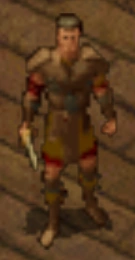

The Blushing Mermaid is a tavern and inn located in the western portion of Northeast Baldur's Gate. The inn is comprised of two floors and has the only above ground entrance to the Undercellar. The Blushing Mermaid offers drinks, rooms and gambling.
The ground floor contains a main room that serves as a place to drink and mingle. The second floor serves as a gambling hall with various gaming tables as well as several circular tables for use. A small room is located on the opposite side from the stairs.
Our dedicated team is passionate about drinking and gambling. We work hard to make them accessible for you. Meet the individuals who make it all possible:
Bork - Owner
